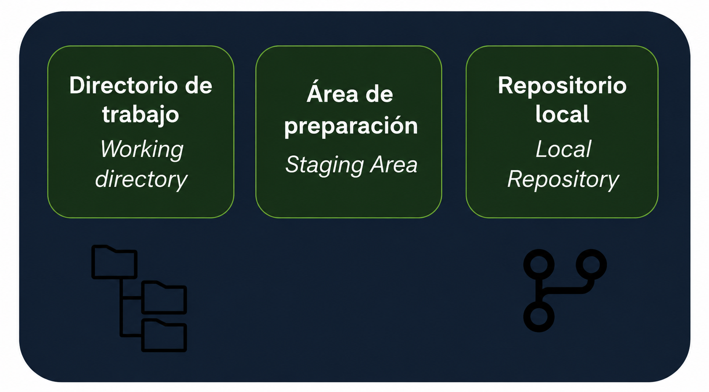

Git es un sistema de control de versiones distribuido, creado por Linus Torvalds en 2005. Permite registrar el historial completo de cambios de cualquier conjunto de archivos, de forma que siempre puedas saber quién cambió qué, cuándo y por qué. Cada desarrollador tiene una copia completa del repositorio en su propia máquina, lo que lo hace rápido, seguro y funcional incluso sin conexión a internet.
GitHub es una plataforma web que aloja repositorios Git en la nube. Permite colaborar con otras personas, revisar código, gestionar tareas y publicar proyectos. GitHub no es Git: Git es la herramienta local, GitHub es el servidor remoto donde se almacena y comparte el trabajo.
El control de versiones resuelve problemas cotidianos muy concretos:
Abre el navegador y ve a https://git-scm.com.
Haz clic en Download for Windows. Se descargará el instalador automáticamente.
Ejecuta el instalador (.exe) y acepta las opciones predeterminadas en todos los pasos. Las opciones por defecto son correctas para la mayoría de usuarios.
En el paso "Choosing the default editor used by Git", puedes seleccionar Visual Studio Code si ya lo tienes instalado, o dejar Vim y cambiarlo después.
Finaliza la instalación y verifica que funciona abriendo una terminal y escribiendo:
git --version # Resultado esperado: git version 2.x.x.windows.x
Para asegurar que el entorno sea autónomo y no invasivo, se utilizará el modo portable de VS Code.
Descargar la Versión Correcta:
Id a la página oficial de descargas de Visual Studio Code. Es crucial que descarguen la versión en formato de archivo comprimido En Windows, seleccionaremos la descarga .zip.
Importante
No utilizad los instaladores de sistema (User o System installers), ya que el modo portátil solo es compatible con estas versiones comprimidas.
Descomprimir y Configurar:
Una vez descargado el archivo, descomprimido en una ubicación de su elección (por ejemplo, en la unidad C:\ o en una carpeta llamada Herramientas).
Descomprimid el zip en la carpeta recién creada (ej. VSCode-win32-x64-[versión]).
Dentro de esta carpeta, creen una nueva carpeta y hay que llamarla exactamente data.
Nota
La creación de esta carpeta data activa automáticamente el modo portable. A partir de ahora, todas las configuraciones, extensiones, historial de sesión y preferencias se guardarán dentro de esta carpeta, haciendo que toda la aplicación sea autocontenida.
VS Code incluye un terminal integrado. Para abrir Git Bash dentro de él:
Ctrl+`).+ y selecciona Git Bash.Consejo: puedes tener múltiples terminales abiertas al mismo tiempo haciendo clic en el
+.
Antes de empezar a trabajar, Git necesita saber quién eres. Esta configuración se guarda de forma global en tu máquina y se usa en todos tus repositorios:
# Configura tu nombre (aparecerá en cada commit) git config --global user.name "Tu Nombre" # Configura tu correo (debe coincidir con el de tu cuenta de GitHub) git config --global user.email "tu@email.com" # Establece la rama principal como "main" (estándar actual) git config --global init.defaultBranch main # Configura VS Code como editor por defecto git config --global core.editor "code --wait" # Verifica que todo está correcto git config --list
Esta configuración solo se hace una vez por ordenador.
Como tendréis la instalación en más de un ordenador (por ejemplo el de casa), se ruega que en todos los ordenadores que estéis usando para el proyecto intermodular, uséis el mismo user.name y el mismo user.email. Así se evitarán errores a la hora de la corrección.
Este capítulo explica paso a paso los cinco comandos fundamentales de Git. Tómatelo con calma: entender bien estos comandos es la base de todo lo demás.
git init — Crea un repositorio
git init convierte una carpeta cualquiera en un repositorio Git. Crea una carpeta oculta llamada .git donde Git almacena todo el historial.
# Crea una carpeta nueva y entra en ella mkdir mi-proyecto cd mi-proyecto # Inicializa el repositorio git init # Resultado: Initialized empty Git repository in .../mi-proyecto/.git/
¿Qué ocurre internamente? Git crea la carpeta .git/ con toda su estructura interna. No toques esa carpeta manualmente.
Para inicializar un repositorio en una carpeta que ya existe:
cd carpeta-existente git init
Concepto clave:

git status — Ver el estado actual
git status es el comando que más usarás. Te dice en todo momento qué está pasando en tu repositorio: qué archivos han cambiado, cuáles están preparados para el próximo commit y cuáles Git ni siquiera está siguiendo.
git status
Los mensajes más comunes que verás:
| Mensaje | Significado |
|---|---|
nothing to commit |
Todo está guardado, no hay cambios |
Untracked files |
Archivos nuevos que Git aún no conoce |
Changes not staged for commit |
Archivos modificados, pero no preparados |
Changes to be committed |
Archivos listos para el próximo commit |
Ejemplo práctico:
# Crea un archivo echo "# Mi proyecto" > README.md # Comprueba el estado git status # Resultado: # Untracked files: # (use "git add..." to include in what will be committed) # README.md
git add — Preparar cambios
git add mueve los cambios al área de preparación (también llamada staging area o índice). Es el paso previo al commit. Puedes elegir exactamente qué cambios incluir.
# Añadir un archivo concreto git add README.md # Añadir varios archivos a la vez git add archivo1.txt archivo2.txt # Añadir todos los archivos modificados y nuevos git add . # Añadir todos los archivos de una carpeta git add src/
Después de git add, comprueba el estado:
git status # Resultado: # Changes to be committed: # new file: README.md
git commit — Guardar un punto de control
git commit toma todo lo que está en el área de preparación y lo guarda de forma permanente en el historial del repositorio. Cada commit es una instantánea del proyecto en ese momento.
# Forma habitual: abre el editor configurado para escribir el mensaje git commit # Forma rápida: escribe el mensaje directamente en la línea de comandos git commit -m "Añade README con descripción del proyecto" # Atajo: añade todos los archivos modificados Y hace commit en un solo paso # (no incluye archivos nuevos sin seguimiento) git commit -am "Actualiza el contenido del README"
git log — Consultar el historial
git log muestra el historial de commits del repositorio, del más reciente al más antiguo.
# Vista completa (muestra hash, autor, fecha y mensaje) git log # Vista compacta en una sola línea por commit git log --oneline # Vista gráfica (muy útil cuando hay ramas) git log --oneline --graph --all # Ver los últimos N commits git log -5 # Buscar commits por mensaje git log --grep="formulario" # Ver los cambios introducidos en cada commit git log -p
Ejemplo de salida de git log --oneline:
git log --oneline
a3f8c21 Añade estilos CSS para el formulario
7b2e109 Corrige validación del campo email
3d91f44 Añade formulario de contacto
1a5c832 Crea estructura inicial del proyecto
Info
El Hast es el código de 7 caracteres (como a3f8c21) que identifica cada commit de forma única. Puedes usarlo para referirte a ese commit en otros comandos.
Repositorio 1: mkdir web-personal cd web-personal git init echo "# Web Personal" > README.md git add . git commit -m "Commit inicial del proyecto web" # Repositorio 2: notas mkdir notas cd notas git init echo "# Mis notas" > README.md git add . git commit -m "Commit inicial del proyecto de notas" # Repositorio 3: scripts mkdir scripts cd scripts git init echo "# Scripts útiles" > README.md git add . git commit -m "Commit inicial del proyecto de scripts"
cd web-personal
echo "<html><body><h1>Hola</h1></body></html>" > index.html
git add index.html
git commit -m "Añade página principal index.html"
echo "body { font-family: Arial; }" > styles.css
git add styles.css
git commit -m "Añade hoja de estilos CSS"
echo "console.log('Hola mundo');" > app.js
git add app.js
git commit -m "Añade script JavaScript principal"
echo "# Historial de cambios" > CHANGELOG.md
git add CHANGELOG.md
git commit -m "Añade archivo de historial de cambios"
echo "MIT License" > LICENSE
git add LICENSE
git commit -m "Añade licencia MIT"
# Ver todos los commits git log # Vista compacta git log --oneline # Ver los últimos 3 commits git log -3 --oneline
En un repositorio nuevo llamado portfolio, crea esta estructura:
index.htmlcss/styles.cssjs/app.jsREADME.mdRealiza un primer commit con el mensaje: "Estructura inicial de portfolio".
Partiendo del repositorio portfolio:
index.html y haz un commit.css/styles.css y haz un segundo commit.Los mensajes de commit deben describir claramente cada cambio.
Muestra:
oneline).En el mismo repositorio, crea al menos un commit cuyo mensaje contenga la palabra "navbar" y después usa un comando para encontrarlo en el historial.
Una vez que dominas el ciclo básico, el trabajo diario con Git implica gestionar cambios, revisar diferencias, deshacer errores y mantener el repositorio ordenado.
Cuando editas un archivo ya rastreado por Git, el flujo es siempre el mismo:
Editar archivo → git status → git add → git commitGit distingue tres estados para un archivo:
git add y está listo para el commit.git status en profundidad
Con archivos ya existentes, git status muestra mensajes más detallados:
# Estado típico después de editar varios archivos git status # Resultado posible: # Changes to be committed: # modified: index.html ← ya en staging # # Changes not staged for commit: # modified: styles.css ← modificado, no en staging # # Untracked files: # nueva-pagina.html ← archivo nuevo, no rastreado
Para una versión más compacta:
git status -s # M index.html ← M verde = en staging # M styles.css ← M rojo = modificado, no en staging # ?? nueva-pagina ← ?? = sin rastrear
git diff permite ver exactamente qué cambió
git diff muestra las diferencias línea a línea entre distintos estados del proyecto.
# Ver cambios en archivos modificados (no preparados) git diff # Ver cambios en archivos que ya están en staging git diff --staged # Ver cambios de un archivo concreto git diff styles.css # Ver diferencias entre dos commits git diff a3f8c21 7b2e109 # Resumen de qué archivos cambiaron (sin detalle de líneas) git diff --stat
La salida usa el formato estándar de diff:
diff
git restore — Deshacer cambios
git restore permite deshacer cambios en el directorio de trabajo o en el área de preparación.
# Descartar cambios en un archivo (vuelve al último commit) git restore styles.css # Descartar cambios en todos los archivos git restore . # Sacar un archivo del área de preparación (quitar del staging) git restore --staged index.html # Sacar todos los archivos del staging git restore --staged . # Recuperar un archivo como estaba en un commit específico git restore --source a3f8c21 styles.css
Warning
git restore descarta cambios de forma permanente. Los cambios no guardados en un commit se pierden sin posibilidad de recuperación. Úsalo con precaución.
Un historial de commits bien cuidado es una documentación valiosa del proyecto. Estas son las prácticas recomendadas:
Haz commits frecuentes y pequeños
Un commit debe representar un cambio lógico y coherente, no una jornada de trabajo entera. Cuanto más pequeño y enfocado, más fácil es entenderlo y revertirlo si algo sale mal.
Un buen mensaje de commit debe:
Usar el imperativo: "Añade", "Corrige", "Elimina" (no "Añadido" ni "Añadiendo").
Ser breve y descriptivo (menos de 72 caracteres).
Explicar el qué, no el cómo. El mensaje debe responder a la pregunta: ¿qué hace este commit? Sé específico.
# ❌ Evita mensajes vagos
git commit -m "cambios"
git commit -m "más cosas"
git commit -m "fix"
# ✅ Usa mensajes descriptivos
git commit -m "Añade validación de email en el formulario de registro"
git commit -m "Corrige bug que mostraba precio sin IVA en la factura"
git commit -m "Actualiza dependencias de seguridad"
No hagas commit de archivos que no deben estar en el repositorio
Contraseñas, claves de API, archivos de configuración locales, carpetas de dependencias... Todo eso va en el .gitignore.
Revisa antes de hacer commit
Haz git status y git diff --staged antes de cada commit para confirmar que solo incluyes lo que quieres.
mkdir tienda
cd tienda
git init
# Crea la estructura del proyecto
mkdir css js img
echo "<!DOCTYPE html>
<html>
<head><title>Tienda</title></head>
<body><h1>Bienvenido</h1></body>
</html>" > index.html
echo "body { margin: 0; font-family: Arial; }" > css/styles.css
echo "console.log('Tienda lista');" > js/app.js
git add .
git commit -m "Crea estructura inicial del proyecto tienda"
# Modifica un archivo echo "/* Cambio accidental */" >> css/styles.css # Comprueba el cambio git diff css/styles.css # Descarta el cambio (vuelve al último commit) git restore css/styles.css # Verifica que el archivo volvió a su estado anterior git status git diff css/styles.css
# Simula una sesión de trabajo con commits frecuentes
echo "<section id='productos'></section>" >> index.html
git add index.html
git commit -m "Añade sección de productos en index.html"
echo ".productos { display: grid; }" >> css/styles.css
git add css/styles.css
git commit -m "Añade estilos de cuadrícula para la sección de productos"
echo "function cargarProductos() {}" >> js/app.js
git add js/app.js
git commit -m "Añade función para cargar productos desde la API"
# Revisa el historial
git log --oneline
En el proyecto tienda, modifica a la vez index.html, css/styles.css y js/app.js.
Después:
index.html.css/styles.css.js/app.js.Comprueba al final que el historial tiene los 3 commits separados.
Realiza cambios en index.html y css/styles.css, pero antes de hacer commit:
index.html.El archivo CSS debe quedarse pendiente para un commit posterior.
--amend Haz un commit en README.md con un mensaje poco claro (por ejemplo: cambios) y después corrígelo para que el mensaje quede profesional y descriptivo usando --amend.
Finalmente, verifica en el historial que solo existe el commit corregido.
Modifica index.html y js/app.js, añade ambos al staging y luego:
js/app.js del staging sin perder su contenido.index.html.git status que js/app.js sigue modificado pero sin preparar.En el trabajo real te equivocarás a menudo: commits con mensajes malos, cambios en archivos incorrectos o merges que no querías. Git permite deshacer casi todo, pero no todos los comandos hacen lo mismo.
git revert — Deshacer sin reescribir historial
git revert crea un commit nuevo que revierte los cambios de un commit anterior. Es la forma más segura cuando ya has hecho push, porque no borra historial.
# Ver historial compacto git log --oneline # Revertir el commit más reciente git revert HEAD # Revertir un commit concreto por hash git revert a3f8c21
Cuándo usarlo: cuando el commit ya está en remoto o cuando trabajas en equipo y no quieres reescribir historial compartido.
También puedes revertir varios commits de una vez, o preparar varios reverts y confirmar al final.
# Revertir los últimos 2 commits (crea 2 commits de revert) git revert HEAD~1..HEAD # Preparar reverts sin confirmar automáticamente git revert --no-commit HEAD~2..HEAD git commit -m "Revierte los dos últimos commits por error funcional"
git reset para mover la rama a un commit anterior
git reset mueve el puntero de la rama. Es muy útil en local antes de publicar cambios.
# Mantiene cambios en staging git reset --soft HEAD~1 # Mantiene cambios en el directorio de trabajo (sin staging) git reset HEAD~1 # Borra cambios y commits (peligroso) git reset --hard HEAD~1
Warning
git reset --hard elimina cambios locales de forma irreversible. No lo uses si no estás completamente seguro.
revert, reset o restore? git revert para deshacer commits ya compartidos en remoto.git reset para reorganizar commits locales antes de publicar.git restore para deshacer cambios de archivos sin tocar el historial.git log --oneline -3 git revert HEAD git log --oneline -3
git log --oneline git revert 7b2e109 git log --oneline -5
En tu repositorio local:
git status que los archivos siguen preparados.Partiendo de un merge ya realizado en main:
git log --oneline --graph.git config --global user.name "Tu Nombre" git config --global user.email "tu@email.com" git config --global init.defaultBranch main git config --list
git init # Inicializar repositorio git status # Ver estado actual git status -s # Estado compacto git add archivo.txt # Preparar un archivo git add . # Preparar todos los cambios git commit -m "mensaje" # Guardar commit con mensaje git commit -am "mensaje" # Add + commit (solo archivos rastreados) git log # Ver historial completo git log --oneline # Historial compacto git log --oneline --graph --all # Historial con ramas
git diff # Cambios sin preparar git diff --staged # Cambios preparados (staging) git restore archivo.txt # Descartar cambios en un archivo git restore . # Descartar todos los cambios git restore --staged archivo # Sacar del staging
git clone URL # Clonar repositorio git remote -v # Ver remotos configurados git remote add origin URL # Añadir remoto git push -u origin main # Primera subida git push # Subir cambios git pull # Descargar e integrar git fetch # Descargar sin integrar
git branch # Ver ramas locales git branch -a # Ver todas las ramas git branch nombre # Crear rama git branch -d nombre # Eliminar rama (fusionada) git branch -D nombre # Eliminar rama (forzado) git switch nombre # Cambiar de rama git switch -c nombre # Crear y cambiar a nueva rama git merge nombre # Fusionar rama en la actual git merge --abort # Abortar merge con conflictos
Ejercicio 4:
mkdir portfolio cd portfolio git init mkdir css js touch index.html css/styles.css js/app.js README.md git add . git commit -m "Estructura inicial de portfolio"
Ejercicio 5:
cd portfolio
echo "<h1>Mi Portfolio</h1>" >> index.html
git add index.html
git commit -m "Añade titulo principal en index.html"
echo "body { margin: 0; }" >> css/styles.css
git add css/styles.css
git commit -m "Añade regla base de margen en styles.css"
Ejercicio 6:
cd portfolio git log --oneline git log -2 --oneline git show --stat
Ejercicio 7:
cd ./portfolio echo "<nav>Menu principal</nav>" >> index.html git add index.html git commit -m "Añade navbar principal" git log --grep="navbar" --oneline
Ejercicio 4:
cd tienda
echo "<section id='productos-destacados'></section>" >> index.html
git add index.html
git commit -m "Añade seccion de productos destacados en index.html"
echo ".productos-destacados { padding: 1rem; }" >> css/styles.css
git add css/styles.css
git commit -m "Añade estilos para la seccion de productos destacados"
echo "function renderProductosDestacados() {}" >> js/app.js
git add js/app.js
git commit -m "Añade funcion para renderizar productos destacados"
git log --oneline -3
Ejercicio 5:
cd tienda
echo "<p>Oferta del dia</p>" >> index.html
echo ".oferta { color: green; }" >> css/styles.css
git diff
git add index.html
git diff --staged
git commit -m "Añade bloque de oferta en index.html"
git status # css/styles.css debe quedar pendiente
Ejercicio 6:
cd tienda echo "## Notas de despliegue" >> README.md git add README.md git commit -m "cambios" git commit --amend -m "Añade notas de despliegue en README" git log -1 --oneline
Ejercicio 7:
cd tienda
echo "<section id='faq'></section>" >> index.html
echo "console.log('FAQ cargada');" >> js/app.js
git add index.html js/app.js
git restore --staged js/app.js
git commit -m "Añade seccion FAQ en index.html"
git status # js/app.js aparece como modificado sin preparar
Ejercicio 3
# Deshacer los dos últimos commits manteniendo cambios en staging git reset --soft HEAD~2 # Verifica que los archivos siguen preparados git status
Ejercicio 4
# Localiza el commit de merge git log --oneline --graph # Revierte el merge indicando el padre principal (normalmente main) git revert -m 1# Verifica el resultado git log --oneline -5